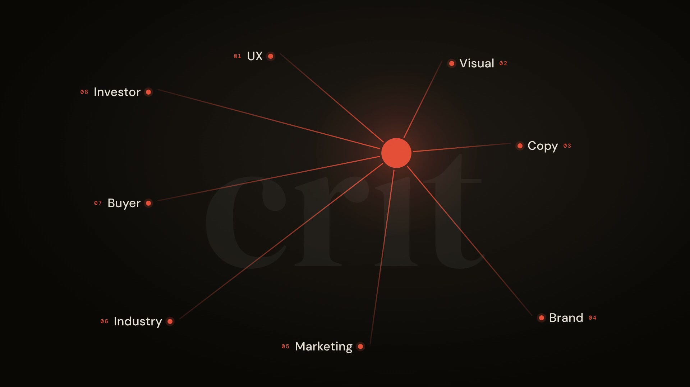

Back to Inside
Products
☰
Products
Crit Audit
DIYA
Crit Mobile
Crit Figma
Dated Figma
Design AI Alchemy
Audit
Product & website audits.
Eight expert lenses.
UX
Visual
Copy
Brand
Marketing
Industry
Buyer
Investor
Start an audit
7-day free trial
Watch the 20-second Crit showreel
